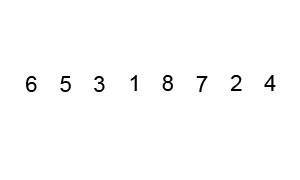

АЛГОРИТМИ і СТРУКТУРИ ДАНИХ
📌Посилання на тему
http://runestone.academy/ns/books/published/pythonds/AlgorithmAnalysis/BigONotation.html https://stackabuse.com/big-o-notation-and-algorithm-analysis-with-python-examples/
📌 Аналіз алгоритмів
📋 Визначення
Що таке аналіз алгоритмів і навіщо це потрібно Аналіз алгоритмів — це оцінка складності алгоритмів, незалежно від конкретної реалізації, що дозволяє порівняти, наскільки ефективно вони працюють при зростанні розміру задачі
Спосіб підрахунку відносного часу на виконання алгоритму
- для спрощенного підрахунку можна орієнтуватися тільки на операції присвоєння
- для більш повного підрахунку можна враховувати всі операції (математичні, логічні, присвоєння і т.д.)
📋 Випадки
Розрізняються найгірший (worst), середній (average) і найкращий (best) варіанти виконання
Best Case (Найкращий випадок)
- Що показує: мінімальну кількість операцій, які алгоритм виконає для будь-якого допустимого вхідного набору.
- Коли застосовується: коли хочеш знати, наскільки швидко алгоритм може працювати у найсприятливішій ситуації.
- Приклад:
- Пошук елемента в масиві (linear search): якщо шуканий елемент знаходиться на першій позиції, алгоритм виконає 1 порівняння → O(1).
- Сортування вставками: якщо масив вже відсортований, алгоритм проходить масив лише один раз → O(n).
Worst Case (Гірший випадок)
- Що показує: максимальну кількість операцій, які алгоритм може виконати.
- Чому важливий: гарантує верхню межу часу виконання — важливо для надійності та прогнозування.
- Приклад:
- Linear search: якщо шуканий елемент відсутній або знаходиться в кінці → n порівнянь → O(n).
- QuickSort: якщо обраний pivot завжди найменший/найбільший, час виконання O(n²).
Average Case (Середній випадок)
- Що показує: очікувану кількість операцій, якщо всі можливі вхідні дані рівноймовірні.
- Коли застосовується: коли дані випадкові або розподіл відомий — дає реалістичну оцінку середнього часу виконання.
- Приклад:
- Linear search: шуканий елемент знаходиться рівноймовірно на будь-якій позиції → в середньому n/2 порівнянь → O(n).
- QuickSort: при випадковому pivot → середній час O(n log n), хоча worst case — O(n²).
🛠️Приклад
Уяви масив із числами і пошук елемента:
- Best case
- Едемент на першій позицій
- порявнянь 1
- Average case
- Елемент десь посередині
- порявняння n/2
- Worst case
- Елемент на останній позиції або відсутній
- порівняння n
📋 Нотації
Коли говоримо про аналіз алгоритмів, ми використовуємо не лише Big-O, а й інші нотації, які уточнюють поведінку функції складності.
Big-O (О-нотація)
Big-O нотація дозволяє описати, як змінюється час виконання (або використання пам'яті) алгоритму як функція розміру вхідних даних 𝑛, фокусуючись на найсуттєвішому, «домінантному» члені складності
- Позначає верхню межу складності.
- Вказує, що час (або пам’ять) алгоритму не перевищить певну функцію при великому 𝑛
- Використовується для оцінки гіршого випадку (worst case).
- Приклад: якщо алгоритм O(n^2), то для дуже великих 𝑛 він працюватиме не швидше, ніж квадратично.
Big-Ω (Омега-нотація)
- Позначає нижню межу складності.
- Вказує, що алгоритм працюватиме не швидше, ніж певна функція при великому n.
- Використовується для оцінки найкращого випадку (best case).
- Приклад: алгоритм сортування вставками має
- найгірший випадок: O(n²) (якщо дані повністю невідсортовані),
- найкращий випадок: Ω(n) (якщо дані вже відсортовані, треба тільки один прохід).
Big-Θ (Тета-нотація)
- Позначає точну межу зростання: одночасно і верхню, і нижню.
- Використовується для середнього випадку (average case) або коли ми знаємо, що алгоритм росте точно з такою швидкістю.
- Приклад: якщо алгоритм має час виконання Θ(n log n), це означає, що він і не швидший за 𝑛 log 𝑛, і не повільніший — його ріст «прив’язаний» до цієї функції.
Приклад для сортування швидким методом (quicksort): * O(n²) — у найгіршому випадку (поганий вибір опорного елемента). * Ω(n log n) — у найкращому випадку. * Θ(n log n) — у середньому випадку (найчастіше).
📋 Big-O (О-нотація)
Big-O нотація дозволяє описати, як змінюється час виконання (або використання пам'яті) алгоритму як функція розміру вхідних даних 𝑛, фокусуючись на найсуттєвішому, «домінантному» члені складності
- Наприклад, якщо час оцінюється як 𝑇(𝑛)=1 + 𝑛 , то з ростом 𝑛 постійний член «1» стає неістотним → O(n)
- нший приклад: T(n)=5n2 + 27n + 1005. При великих 𝑛 домінує 𝑛2, а коефіцієнт 5 теж «неважливий» → O(n2)
Поширені класи складності
| Назва | Нотація | Тип |
|---|---|---|
| constanta | O(1) | постійна |
| logaritm | O(log n) | логарифмічна |
| linear | O(n) | лінійна |
| log-linear | O(n log n) | лог-лінійна |
| quadratic | O(n2) | квадратична |
| cubic | O(n3) | кубічна |
| exponential | O(2n) | експоненційна |
Константна та логаритмічна — найкращі, квадратична і гірші — часто неприйнятні для великих даних.
📌Пошукові алгоритми
📋Лінійний пошук
📋Лінійний пошук з бар'єром
📋Бінарний пошук
📌 Алгоритми сортування
📋Links
- A tour of the top 5 sorting algorithms with Python code
- runestone.academy - Sorting
- Sorting Algorithms
- Python - Sorting Algorithms
- Sorting Algorithms in Python
📋Алгоритм бульбашки (Bubble Sort)
📋Вибірка (Selection Sort)
📋Вставка (Insertion Sort)
📋Злиття (Merge Sort)

Сортування злиттям - це рекурсивний алгоритм, який постійно ділить список навпіл. Якщо список порожній або містить один елемент, то він відсортований за визначенням (базовий випадок). Якщо список містить більше одного елемента, ми розділяємо список і рекурсивно викликаємо сортування злиттям для обох половин. Після того, як дві половини відсортовано, виконується фундаментальна операція, яка називається злиттям. Злиття - це процес взяття двох менших відсортованих списків і об'єднання їх в один, відсортований, новий список.
def mergeSort(alist):
print("Splitting ",alist)
if len(alist)>1:
mid = len(alist)//2
lefthalf = alist[:mid]
righthalf = alist[mid:]
mergeSort(lefthalf)
mergeSort(righthalf)
i=0
j=0
k=0
while i < len(lefthalf) and j < len(righthalf):
if lefthalf[i] <= righthalf[j]:
alist[k]=lefthalf[i]
i=i+1
else:
alist[k]=righthalf[j]
j=j+1
k=k+1
while i < len(lefthalf):
alist[k]=lefthalf[i]
i=i+1
k=k+1
while j < len(righthalf):
alist[k]=righthalf[j]
j=j+1
k=k+1
print("Merging ",alist)
alist = [54,26,93,17,77,31,44,55,20]
mergeSort(alist)
print(alist)
📋Швидке сортуватння (Quick Sort)
Швидке сортування спочатку вибирає значення, яке називається опорним елементом (pivot value). Хоча існує багато різних способів вибрати опорний елемент, ми просто використаємо перший елемент у списку. Роль стрижневого значення полягає в тому, щоб допомогти розділити список. Фактична позиція, до якої належить ключове значення в кінцевому відсортованому списку, яку зазвичай називають точкою поділу, буде використовуватися для поділу списку при наступних викликах швидкого сортування.

📋Heap sort
📋partition
📋shell_sort
📌Стек (Stack)
📋 Визначення
Стек — це абстрактна структура даних, яка працює за принципом "останній прийшов — перший пішов" (LIFO). Уяви собі стопку тарілок: ти можеш взяти лише верхню, і нову кладеш теж зверху. Саме так поводиться стек у програмуванні.
🧠 Основні властивості стеку
- LIFO — останній доданий елемент буде першим, який видалиться.
- Операції тільки з верхівкою — не можна звертатися до середини стеку напряму.
🔧 Основні операці
- push (додавання елементу)
- Додає елемент на верхівку стеку.
- pop (видалення елементу)
- Видаляє елемент з верхівки стеку і повертає його.
- peek / top (перегляд верхнього елементу)
- Повертає верхній елемент стеку, не видаляючи його.
- is_empty (перевірка на порожнечу)
- Перевіряє, чи є елементи в стеку.
- size (розмір стеку)
- Повертає кількість елементів у стеку.
🧩 Застосування стеку - Рекурсія — кожен виклик функції зберігається в стеку викликів. - Обробка виразів — калькулятори, парсери, компілятори. - Повернення назад — браузери, редактори (історія дій). - Алгоритми обходу графів — DFS (глибина першого пошуку).
🧠 Реалізація стеку
- Реалізація через список (list)
- Реалізація через зв’язаний список (linked list)
- Реалізація через collections.deque
📋 Приклади
Реалізація через список (list)
class Stack:
def __init__(self):
self.items = []
def push(self, item):
self.items.append(item)
def pop(self):
if not self.is_empty():
return self.items.pop()
return None
def peek(self):
if not self.is_empty():
return self.items[-1]
return None
def is_empty(self):
return len(self.items) == 0
def size(self):
return len(self.items)
# Приклад використання
stack = Stack()
stack.push(10)
stack.push(20)
print(stack.pop()) # 20
print(stack.peek()) # 10
📌Черга (Queue)
📋 Визначення
Черга — це одна з базових структур даних, яка працює за принципом "перший прийшов — перший пішов" (FIFO). Уяви собі чергу в магазині: той, хто став першим, обслуговується першим. Саме так поводиться і програмна черга.
«Перший прийшов — перший вийшов».
Основні характеристики черги
- Голова (head) — елемент, який буде видалено наступним.
- Хвіст (tail) — місце, куди додається новий елемент.
- FIFO — порядок обробки: перший доданий — перший оброблений.
Основні операції черги
| Операція | Опис |
|---|---|
| enqueue(item) | Додати елемент у кінець черги |
| dequeue() | Взяти елемент з початку черги і видалити його |
| peek() / front() | Подивитися перший елемент, не видаляючи |
| is_empty() | Перевірити, чи черга порожня |
Типи черг
- одностороння
- видалення елементів відбувається з кінця
- додавання нових елементів з початку
- двостороння
- видалення і додавання можуть відбуватися з обох боків
📌Зв'язаний список (linked list)
ЛІНКИ
- stackabuse - Python Linked Lists
- geeksforgeeks - Linked List Data Structure
- tutorialspoint - Python - Linked Lists
Зв’язаний список — це структура даних, яка складається з елементів (вузлів). Кожен вузол має:
- дані (наприклад число, рядок, об’єкт);
- посилання (вказівник) на наступний елемент списку.
Особливості:
- Данні розташовані не обов’язково у суміжних сегментах пам’яті.
- Кінець списку позначається значенням None (аналог NIL)
Типи зв’язаних списків:
- Однозв’язаний список (Singly Linked List):
- кожен вузол знає тільки наступний.
- вузол має лише next-посилання
- Двозв’язаний список (Doubly Linked List):
- вузол має посилання на наступний і попередній.
- кожен вузол містить і prev, і next;
- дозволяє двобічну навігацію, але потребує більше пам’яті
- Кільцевий список (Circular Linked List):
- останній вузол посилається на перший, що створює цикл;
- корисний для циклічних структур (наприклад, у грі чи повторюваних чергах)
Порівняння із масивами
Переваги:
- Динамічне виділення пам’яті — не потрібно резервувати місце попередньо
- Легкі вставка та видалення всередині структури — оновлюються лише посилання, без пересувань пам’яті
Недоліки:
- Потрібна додаткова пам’ять для зберігання посилань.
- Повільний прямий доступ — щоб дістатися до k-го елементу, доводиться проходити весь список (O(n))
📋 Приклади
Однозв’язний список
class Node:
def __init__(self, value):
self.value = value
self.next = None
class SinglyLinkedList:
def __init__(self):
self.head = None
def push_front(self, value):
new_node = Node(value)
new_node.next = self.head
self.head = new_node
def push_back(self, value):
new_node = Node(value)
if not self.head:
self.head = new_node
return
cur = self.head
while cur.next:
cur = cur.next
cur.next = new_node
def print_list(self):
cur = self.head
while cur:
print(cur.value, end=" -> ")
cur = cur.next
print("None")
# Приклад
sll = SinglyLinkedList()
sll.push_front(3)
sll.push_back(5)
sll.push_front(1)
sll.print_list() # 1 -> 3 -> 5 -> None
Двозв’язний список
class DNode:
def __init__(self, value):
self.value = value
self.prev = None
self.next = None
class DoublyLinkedList:
def __init__(self):
self.head = None
self.tail = None
def push_front(self, value):
new_node = DNode(value)
if not self.head:
self.head = self.tail = new_node
else:
new_node.next = self.head
self.head.prev = new_node
self.head = new_node
def push_back(self, value):
new_node = DNode(value)
if not self.tail:
self.head = self.tail = new_node
else:
self.tail.next = new_node
new_node.prev = self.tail
self.tail = new_node
def print_forward(self):
cur = self.head
while cur:
print(cur.value, end=" <-> ")
cur = cur.next
print("None")
# Приклад
dll = DoublyLinkedList()
dll.push_back(10)
dll.push_back(20)
dll.push_front(5)
dll.print_forward() # 5 <-> 10 <-> 20 <-> None
Кільцевий однозв’язний список
class CNode:
def __init__(self, value):
self.value = value
self.next = None
class CircularLinkedList:
def __init__(self):
self.tail = None # з tail.next отримаємо head
def push_back(self, value):
new_node = CNode(value)
if not self.tail:
self.tail = new_node
self.tail.next = self.tail
else:
new_node.next = self.tail.next
self.tail.next = new_node
self.tail = new_node
def print_list(self):
if not self.tail:
print("Empty")
return
cur = self.tail.next # head
while True:
print(cur.value, end=" -> ")
cur = cur.next
if cur == self.tail.next:
break
print("(back to head)")
# Приклад
cll = CircularLinkedList()
cll.push_back("A")
cll.push_back("B")
cll.push_back("C")
cll.print_list() # A -> B -> C -> (back to head)
📌Дерева
📋 Визначення
📋 Обхід дерева
- preorder
- postorder
- inorder
📌Графи
📋 Визначення
Граф — це структура, що складається з:
- Вершин (nodes, vertices) — об'єктів або точок.
- Ребер (edges, arcs) — зв'язків між вершинами.
Вершина (Vertex)
Вершина (також звана "вузлом") є фундаментальною частиною графа. Вона може мати ім'я, яке ми будемо називати "ключем". Вершина також може мати додаткову інформацію. Ми будемо називати цю додаткову інформацію "корисним навантаженням".
Ребро (Edge)
Ребро (також зване "дугою") - це ще одна фундаментальна частина графа. Ребро з'єднує дві вершини, щоб показати, що між ними існує зв'язок. Ребра можуть бути односторонніми або двосторонніми. Якщо всі ребра в графі односторонні, ми говоримо, що граф є орієнтованим графом, або диграфом. Наведений вище граф передумов до занять є диграфом, оскільки ви повинні пройти деякі заняття раніше за інші.
Вага (Weight)
Ребра можуть мати вагу, щоб показати, скільки коштує шлях з однієї вершини в іншу. Наприклад, на графі доріг, які з'єднують одне місто з іншим, вага ребра може відображати відстань між двома містами.
Шлях (Path)
Шлях у графі - це послідовність вершин, з'єднаних ребрами.
Цикл (Cycle )
Цикл в орієнтованому графі - це шлях, який починається і закінчується в одній вершині.